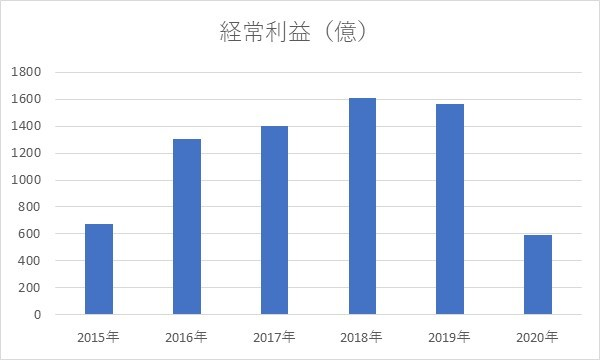
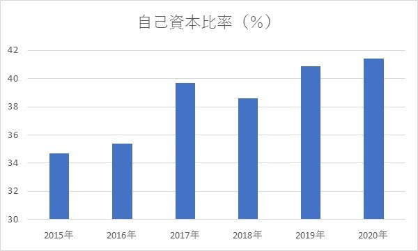
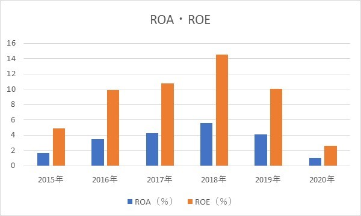

新型コロナで大打撃・ANA HD
2020/6/10
参照：https://www.ana.co.jp/travelandlife/trivia/vol07/
ANA HDの大幅業績悪化
新型コロナウイルス拡大で大打撃を受けた航空業界大手ANA HDについての企業分析です。
目次
- 1 ANA 業績悪化
- 2 経常利益
- 3 自己資本比率
- 4 ROA・ROE
- 5 まとめ
ANA 業績悪化
2020年2月ごろから新型コロナウイルスの拡大が世界中で始まり、各国は旅行または業務目的での海外渡航禁止を積極的に行っていきました。
これによる打撃を最も受けたのは観光事業と航空業界でしょう。なんせ営業規模を大幅削減しなければならないからです。
営業できなければ、整備費や管理費でコストが積み重なっていきますし、なにより旅行などの自粛解禁が最も時間がかかるので、
他業界よりも営業規模を回復させるのが遅くなるため、日本トップの航空会社の今後を心配に思う人もいるだろうと思います。
そこで、主に財務面で倒産や企業規模縮小などの恐れがないか見ていきます。
経常利益
単位が大きいので、正確な数字だと...
- 2015年：671億円
- 2016年：1307億円
- 2017年：1403億円
- 2018年：1606億円
- 2019年：1566億円
- 2020年：593億円
新型コロナウイルスの影響は年度末のみですが、3分の1弱ほどの経常利益の減少があることが分かります。 特に第4四半期の利益は600億円弱の赤字なので、ほとんどが新型コロナウイルスの影響です。
需要の減少が主な原因ですが、費用面では人件費が減少した代わりに整備費や外注・外部委託費などが利益率の悪化につながっているようです。 （詳しくは、こちら）
自己資本比率

利益は大幅に減少しましたが、資産面では例年通りといった感じです。
自己資本比率が40％は非常に優秀です。 また、流動比率は103％ほどなので、倒産の要素はないかと思います。
ROA・ROE
ROA、ROEについては、利益が下がって資産が変わらないから当然下落しますが、 例年はどちらも非常に優秀です。
航空業界に関しては、莫大な初期費用が必要であり、命を預けるという信用で成り立っているので、他企業が市場に参入してくることは難しいでしょう。
なので、航空の需要が高まれば、ANAの業績も回復に向かうと予想されます。
まとめ
業績は近年で最も悲惨ですが、財務状況が優秀なのが救いですね。
もし、財務状況が悪ければ、多くの航空会社のように破綻していたかもしれません。
今後については、需要が戻れば業績も確実に回復するので、いつ需要が戻るかが問題です。
個人的な意見では、大量生産可能なワクチンの開発にかかわってくると思いますが、旅行については、
旅行先でいつもよりも多くのお金を落とすことによる経済効果は大きいので、長期休み期間には制限解除したいところでしょう。
ワクチンができれば、いずれインフルエンザのような脅威度に変化していくと思うので、
2020年6月現在、ワクチンが世界中で開発されているという状況を踏まえると、
規制解除は近いうちに行われるだろうと思います。
個人的な意見が入りましたが、ようは、ANAの財務状況は優秀なので、短期間で経営破綻することはないだろうということに加え、 長期的な移動制限は現実的ではないため、ANAが経営破綻する可能性は低いだろうと思います。